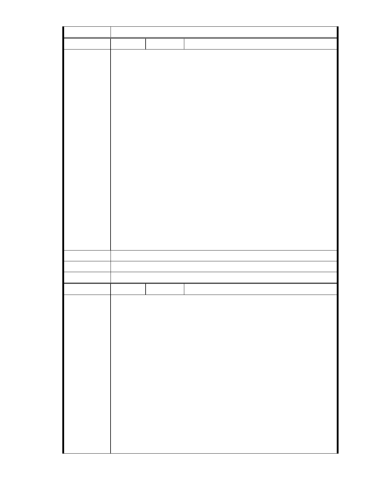

委 員 會 決 議 同編號 1。
編
號 191
陳情人 台北內湖科技園區發展協會
主旨：
協會強力支持並樂見慈濟在內湖籌設兼顧環保、生態環境、社會福利、
救災服務多功能的社福教育園區案
說明：
1．本案籌設地址事實上在 86 年慈濟購地之前已經遭到嚴重破壞，廠區
裡鋪設柏油路、鐵皮屋林立，髒亂不堪．而目前慈濟對於本案是以生態
建築與環境共生為原則，在 35％的建蔽率之外，其餘空間均規劃為公園
綠地和景觀生態湖，全區開放，容積率僅 120 %，不會有突兀的高樓，預
期建設完成之後，將會成為內湖地區地標景點．
陳 情 理 由 2．慈濟購地之後，在園區進行環保教育與社會福利已有 10 年．志工利
用現有簡陋空間，進行環保回收與教育工作更是卓然有成．每年有上百
個國內外環保團體，包括歐洲多國國會議員及大陸參訪團前來參訪，學
習慈濟的環保資源回收，對促進台北的環境教育與國際形象有很大的助
益．且慈濟將規劃設置具有生態的滯洪沉沙池並依相關法令規定辦理額
外負擔區外的排水有利協助改善地區淹水問題．此外，生態滯洪湖、生
態景觀池的規畫對內湖地區的排水及生態教育將有很大的貢獻．
3．協會強力支持並樂見此一兼顧環保、生態環境、社會福利、救災服務
多功能的內湖慈濟園區案，並期待為內湖地區一座耀眼的環保生態地標
景點．也企盼郝市長及相關單位能實地了解並協助本案的順利進行。
建議辦法
市 府 說 明 相關陳情意見將納入本案審查人民意見，依法定程序辦理。
委 員 會 決 議 同編號 1。
編
號 192
陳情人 MA201212210141
我住在大湖將近 40 年，這 40 年來看到整條大湖山莊街、成功路、文德
路、德安百貨都是從水稻田，漸漸變成旱田，再變成空地，又經過一段
時間，就蓋起一棟棟高樓大廈，成功路五段現在這條大馬路，連同捷運
都是一車一車廢土和磚塊水泥，填掉至少三分之一的大湖建造出來的，
才有今天的繁榮熱鬧，若是內湖不准開發，我相信到今天仍然會是一片
綠油油的田園美景。
建商蓋好房子，賣掉就會離開，但是慈濟是要常住這裡，如果以後
陳 情 理 由 經常山崩淹水，慈濟更是首先遭殃，他會拿自己的生命開玩笑嗎? 會陷
害自己嗎? 12 月 15 日座談會聽到一位工程師說：「慈濟園區雖設有滯洪
池，但是如果像南部豪大雨時，一天降下幾千毫米的雨量，誰敢保證不
會淹水。」試問即使慈濟不蓋志工園區，一直保持這種破舊樣子，一旦
台北一天降下數千毫米大雨，難道就不淹水嗎? 不可能的。要淹一定照
淹，絕對不會少了一個慈濟園區就讓大湖永無水患。
我住在大湖山莊就在慈濟園區隔壁，若是園區開發不當，我應
該比各位更憂心，我仍然感謝環保團體的抗議與監督，我相信慈濟應該
- 248 -